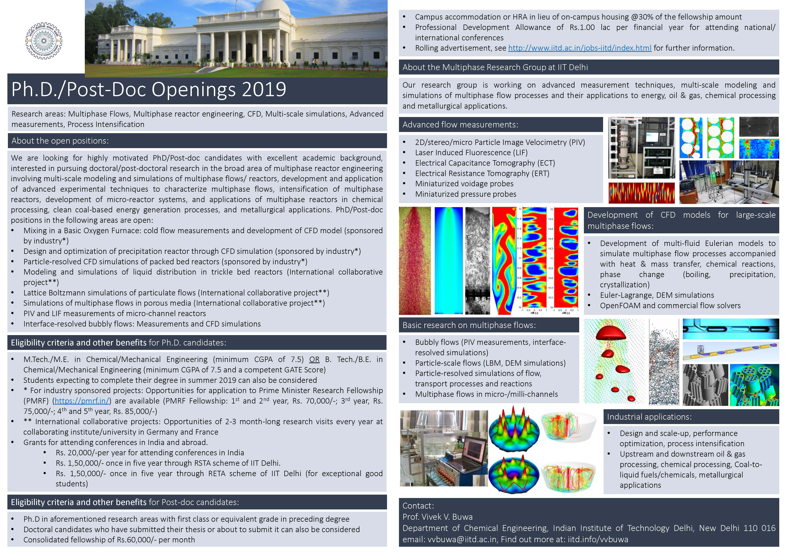

| Recent Publications
|
|
Research highlights |
-
Karthik G. M. and Vivek V. Buwa, "Effect
of Particle Shape on Catalyst Deactivation Using
Particle-Resolved CFD Simulations", 2018, Chemical
Engineering Journal (ISCRE 25 special issue), Accepted
for publication.
-
Brajesh
K. Singh, Ekta Jain and Vivek V. Buwa, "Feasibility of
Electrical Resistance Tomography for Measurements of
Liquid Holdup Distribution in a Trickle Bed Reactor",
2018, Chemical Engineering Journal, Accepted for
publication.
-
Abhijeet
H. Thaker, Mayur Darekar, K. K. Singh and Vivek V. Buwa,
"Experimental Investigations of Liquid–Liquid
Disengagement in a Continuous Gravity Settler", 2018,
Chem. Eng. Res. Des., In press.
-
Karthik
G. M. and Vivek V. Buwa,
"Particle-resolved Simulations of Methane Steam
Reforming in Multi-layered Packed Beds", 2018,AIChE
Journal, In
press.
- David I. A. Dhanraj and Vivek
V. Buwa, "Effect of Capillary Pressure Force on Local
Liquid Distribution in a Trickle Bed", 2018, Chem. Eng,
Sci., 191, 115-133.
- Abdul Quiyoom, S.K. Ajmani and
Vivek V. Buwa, "Optimization of Bottom Tuyere
Configuration for Basic Oxygen Furnace Steelmaking
through Experiments and CFD Simulations", 2018, Chem.
Eng. J.,
346, 127-142.
- V.M.Rajesh and Vivek V. Buwa,
“Volume-of-Fluid Simulations of Gas-Liquid-Liquid Flows
in Microchannels”, 2018, Chem. Eng. J.,
345, 688-705.
- Saroj K. Panda and Vivek V.
Buwa, “Optimization of Geometry and Internals of a
Continuous Gravity Settler for Liquid-Liquid
Separation”, 2017, Ind. Eng. Chem. Res., 56 (46),
13929–13944.
- Parul Tyagi and Vivek V. Buwa, "Dense Gas-Liquid-Solid Flow in a Slurry Bubble
Column: Measurements of Dynamic Characteristics, Gas
Volume Fraction and Bubble Size Distribution", 2017, Chemical
Engineering Science, 173, 346–362.
-
Abdul Quiyoom, S.K. Ajmani and Vivek V. Buwa, "Role of
Free Surface on Gas-Induced Liquid Mixing in a Shallow
Vessel" 2017, AIChE Journal, 63(8), 3582-3598.
-
Abdul Quiyoom, Ravi Golani, Vikas Singh and Vivek
V. Buwa, "Effect of Differential Flow Schemes on Gas-Liquid Flow and
Liquid Phase Mixing in a Basic Oxygen Furnace (BOF)", 2017, Chemical
Engineering Science, 170, 777–789 .
-
Karthik G. M. and Vivek V. Buwa, 2017, "Effect
of Particle Shape on Fluid Flow and Heat Transfer for Methane Steam Reforming
Reactions in a Packed Bed", AIChE Journal,
63(1), 366-377.
-
Parul Tyagi and Vivek V.
Buwa, "Experimental Characterization of Dense Gas-Liquid Flow in a
Bubble Column using Voidage Probes", 2017,
Chemical Engineering Journal, 308, 912-928.
-
Brajesh Kumar Singh, Abdul Quiyoom and Vivek V.
Buwa, 2017, "Dynamics of Gas-Liquid Flow in a Cylindrical Bubble Column:
Comparison of Electrical Resistance Tomography and Voidage
Probe Measurements", Chemical Engineering Science, 158, 124-139.
-
Saroj K. Panda, K. K. Singh, K. T. Shenoy and Vivek V. Buwa, 2017, "Numerical
Simulations of Liquid-Liquid Disengagement in a Continuous Gravity Settler
using OpenFOAM and Experimental Verification",
Chemical Engineering Journal, 310, 120-133.
-
Arpit Jindal and Vivek V. Buwa, 2017, "Effect
of Bed Characteristics on Local Liquid Spreading in a Trickle Bed", AIChE
Journal, 63(1), 347-357.
|
|

Cover illustration:
Effect of particle shape on fluid flow and heat transfer for
methane steam reforming reactions: Simulated temperature
distribution on particle surface (left) and on r–z plane
(right) for (i) cylinder, (ii) trilobe, (iii) daisy, (iv)
hollow cylinder, (v) cylcut, and (vi) 7-hole cylinder
particle shapes. Image courtesy: Karthik G. M. and Vivek V.
Buwa, Indian Institute of Technology Delhi
10.1002/aic.15542.
(http://onlinelibrary.wiley.com/doi/10.1002/aic.v63.1/issuetoc)
This work is featured on the cover page of the ISCRE 24
special issue of AIChE Journal (Jan 2017). This special issue contains a
selected collection of state-of-the-art developments in the field of CRE
presented at ISCRE-24 (Minneapolis, USA, June 2016) by distinguished
international researchers in reaction engineering, prominent industrial
practitioners, and new researchers and students |
|
Conference contributions |
|
News & Announcement |
14th International Conference on Gas-Liquid and
Gas-Liquid-Solid Reactor Engineering (GLS-14), Guilin
(China), 30 May-03 June 2019
- Karthik G. M., Abhijeet H.
Thaker and Vivek V. Buwa, 2018, “Particle-Resolved
Simulations of Catalytic Fixed Bed Reactors: Comparison
of Turbulence Models, LES and PIV Measurements",
Accepted for presentation.
- Abhijeet H. Thaker, Saroj Kumar
Panda and Vivek V. Buwa, 2018, “CFD-PBM Simulations of
Binary and Interfacial Coalescence in Separation of
Liquid-Liquid Dispersions Using OpenFOAM”, Accepted for
presentation.
- Karthik G. M. and Vivek V. Buwa,
2018, “Performance Evaluation of Different Catalytic
Structures for Methane Steam Reforming in Packed Beds”,
Accepted for presentation.
- Sahil V. Bhujbal, Abhijeet H. Thaker and Vivek V. Buwa, 2018, "Effect of
Sloshing Gas−Liquid Interface on Dynamics of Meandering
Bubble Plumes and Mixing in a Shallow Vessal:
PIV and LIF Measurements", Accepted for presentation.
-
Shishir Tiwary, Brajesh K. Singh and Vivek V.
Buwa, 2018, "Characterization of Bubbling Behaviour in a
Three-phase Slurry Bubble Column using Electrical
Resistance Tomography", Accepted for
presentation.
- Swapnil Sharma and Vivek V.
Buwa, 2018, "Characterization of Dynamics of
Heterogeneous Gas-Liquid Flow Using Two-/Multi-Fluid
Eulerian Simulations", Accepted for presentation.
19th International Symposium on Applications of Laser and
Imaging Techniques to Fluid Mechanics, Lisbon (Portugal), 16-19 July 2018
-
Sahil V. Bhujbal, Abhijeet H. Thaker, Deepak Sharma
and Vivek V. Buwa, 2018, "Effect of Free Interface on
Dynamics of Gas−Liquid and Mixing in a Shallow Vessel:
PIV and LIF Measurements", Accepted for presentation.
|
|
|
|
17 October 2018: Saroj K. Panda successfully defended his
Ph.D. thesis "Numerical
Investigations of Liquid-Liquid Disengagement in a Batch and
Continuous Gravity Settler" |

|
02 July 2018: Adbul Quiyoom successfully defended his Ph.D.
thesis "Experimental and Numerical
Investigations of Dispersed Gas-Liquid Flow and Mixing in a
Scaled-Down Cold Flow Model of Basic Oxygen Furnace" |
|
|
|
Indo-German Symopsium on "Advanced
Measurements and Multiscale CFD Simulations for
Intensification of Multiphase Flow Processes" as a part of
Indo-German Partnership (IGP) project between IIT Delhi and
FAU Erlangen was held during 03-05 October in IIT Delhi |
 |
 |
|
25th International Symposium on Chemical Reaction
Engineering (ISCRE 25), Florence (Italy), 20-23 May 2018
|
|
PhD and Post-doc positions |
- Karthik G. M. and Vivek V.
Buwa, 2018, “Effect of Particle Shape on Catalyst
Deactivation Using Particle Resolved CFD Simulations”,
Presented.
- Karthik G. M. and Vivek V.
Buwa, 2018, “A Computational Approach for Selection of
Optimal Catalyst Shape for Industrial Catalytic
Reactions”, Presented.
- Abhijeet H. Thaker and Vivek V.
Buwa, 2018, “Experimental Investigations of Interfacial
and Binary Coalescence of Multi-layered Drops”,
Presented.
- Sirisha Parvathaneni, Brajesh
K. Singh, Vivek V. Buwa, 2018, “Characterization of
Binary Gas-Solid Flow in a Semi-Batch Cylindrical
Fluidized Bed Using Electrical Capacitance Tomography”,
Presented.
-
Siddhartha Pradeep and Vivek V. Buwa, 2018,
“VOF simulations of Particle-Resolved Liquid Spreading
in 2D Trickle Beds”, Presented.
|
|
- Current PhD and Post-doc positions

|
|
|
|
|
|
Last updated:
January 10, 2019 14:22:40 |
Maintained
by:
ChESS, IITR |
|

{kind=link}